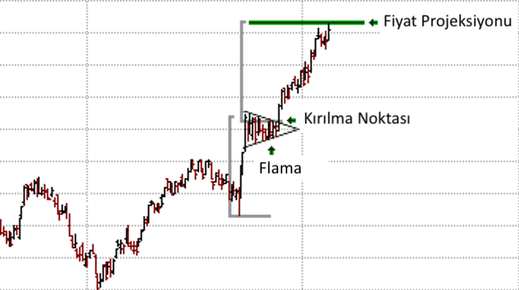
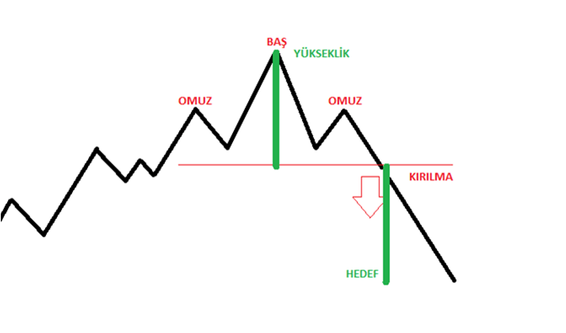
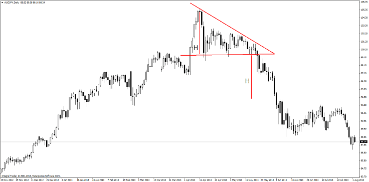

Flama formasyonu, kısa-vadeli devam formasyonlarından biridir. Keskin bir fiyat hareketinin ardından, nispeten kısa bir konsolidasyon dönemini temsil eden flama formasyonu, bayrak formasyonu ile oldukça benzerlik göstermekte olup, uzun bir fiyat hareketinin orta noktasında gerçekleşir. Flama hareketi bir dönüş formasyonu değildir. Flama formasyonu; fiyat, hızlı ve neredeyse dikeye yakın bir hareket gerçekleştirdikten sonra, bu hareketi takiben daha düşük hacimlerle karakterize edilmiş kısa bir tıkanıklık veya konsolidasyon dönemidir. Burada, tıkanıklık alanı, “flama” olarak tasvir edilirken; başlangıçtaki dikey hareket ise, “flama direği” olarak tasvir edilir.
Güvenilirlik derecesi yüksek trend dönüş formasyonlarından biridir. Yükselen bir trendin sonlanmakta olduğunu ve düşen bir trendin başlayacağını gösterir. OBO oluşmaya başlarken, fiyatlar ralli yapmaktadır. Yükselişin ardından gelen küçük bir düzeltme hareketiyle grafik bir tepe yapar ve önce SOL OMUZ oluşur. Sonrasında yükseliş devam eder. Geri çekilmenin sonlandığı bölgeden alışların gelmesiyle yukarı yönlü hareket tekrar başlar fiyatlar daha büyük bir tepe oluşturarak sol omuz seviyesini geçer ve BAŞ oluşur. BAŞ oluştuktan sonra fiyatlar birinci omuz seviyesinde oluşan desteğe kadar geri çekilir. Bu destek seviyesine boyun çizgisi denir. Boyun çizgisinden gelen tepki alımlarıyla fiyatlar son kez yukarı bir hareket yaparak sağ omuzu oluşturur. Sağ omuz sol omuzla aşağı yukarı aynı seviyelerde oluşur Sağ omuz tamamlandıktan sonra satışların güçlenmesiyle boyun çizgisi kırılır, formasyon tamamlanır ve yükseliş trendi omuz baş omuz formasyonuyla birlikte sonlanır. Kırılma sonrası gelen sert satışların etkisiyle boyun çizgisi ve başı oluşturan ikinci tepenin uzunluğu kadar geri çekilme beklenir. Omuz baş omuz formasyonunun sonlandığı be boyun çizgisinin kırıldığı bölgeden itibaren forex piyasasında, satış pozisyonu açmak uygundur. Hedeflenen fiyat ise baş ile boyun çizgisi arasındaki fiyat farkının ölçümü yapılarak hesaplanır.
Alçalan üçgen formasyonu, yükseliş trendlerinin sonda kalan kısımlarında düşüşe doğru gerçekleşen bir hareket ortaya koyar. Aynı zamanda da bu düşüş trendlerinin de orta kısımlarında devam formasyonu olarak da kendilerini göstermeleri mümkündür. Bu açılan da üçgen formasyonu dahilindeki düşüşler dip noktalarda düz çizgileri meydana getirmektedirler.Alçalan tepe ile alttaki yatay tabanın birleşmesiyle oluşan alçalan üçgen, alçalan trendin devamında bir devam örüntüsü gösterir. Bir yükseliş eğilimi görürken geri dönüş modelleri olarak da kullanılabilirler.Bu üçgenlerin tepe noktalarında meydana gelmekte olan tüm yükseliş hareketleri, kendinden bir önce oluşmuş olan hareketin de tepe kısmından düşük olacak şekilde meydana gelmektedir. Böylelikle de alçalan üçgen formasyonunda görülen işlem hacmi ise çoğunlukla az olarak tespit edilmektedir
